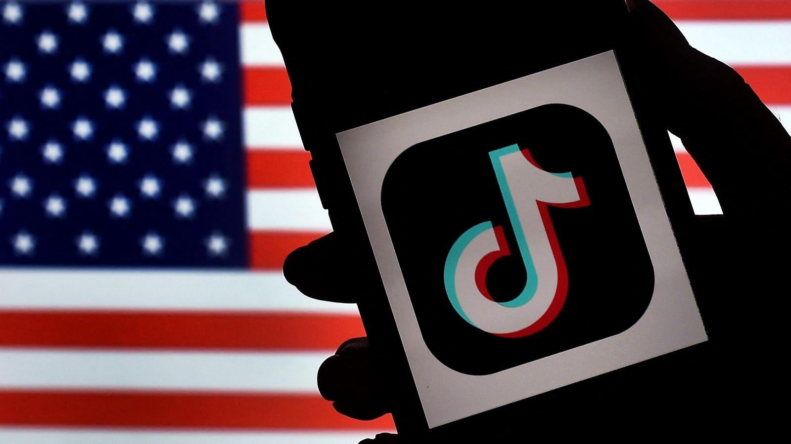

House Will Vote Today On Nationwide TikTok Ban—Here’s What To KnowTopline The House of Representatives voted Saturday to approve legislation that could ban TikTok nationwide by 2025, following years of scrutiny into whether the popular social media app poses national security and privacy risks. Key Facts The House voted 360-58 to approve the bill, which incudes some funding to Ukraine in the form of a loan while also approving the U.S. to use frozen Russian assets to help Ukraine’s war efforts. The bill—included in a contested foreign aid package—will require China-based ByteDance to sell TikTok within 270 days or face a ban in the U.S., though President Joe Biden has the option to extend the deadline by 90 days. An earlier version of the bill requiring ByteDance to divest within 180 days was fast-tracked and approved with bipartisan support in the House last month, after it received rare, unanimous approval from the House Energy and Commerce Committee. That version was held up in the Senate, after Sen. Maria Cantwell, D-Wash., argued the ban should be extended from six months to a year to “ensure there is enough time for a new buyer to get a deal done.” Biden has signaled support for the legislation, indicating, “If they pass it, I’ll sign it,” while former President Donald Trump—who tried to ban TikTok through executive action in 2020—has voiced opposition to the ban while noting he believes the app still poses a national security threat. What To Watch For The bill was voted on as part of a foreign aid package. The legislative package is set to go to the Senate, which returns from recess April 29. Chief Critic TikTok said it is “unfortunate” the House is “using the cover of important foreign and humanitarian assistance to once again jam through a bill that would trample the free speech rights of 170 million Americans, devastate 7 million businesses and shutter a platform that contributes $24 billion to the U.S. economy annually.” TikTok previously told Forbes that forcing ByteDance to divest “doesn’t solve the problem,” adding a “change in ownership would not impose any new restrictions on data flows or access.” Surprising Fact Billionaire X owner Elon Musk tweeted his opposition to the TikTok ban Friday, saying it is “contrary to freedom of speech and expression.” Musk noted he is against the proposed bill “even though such a ban may benefit the X platform.” His opposition comes days after he polled users on whether he should bring back the short-form video platform Vine, which shut down in 2017. Nearly 70% of users voiced support for Vine’s revival. Key Background An effort to ban TikTok in the U.S. has built up in recent years, as the app faces scrutiny amid fears the Chinese government could access users’ data. Several states banned TikTok for government devices on national security grounds in 2022 before Congress banned the app from federal devices as part of a larger government spending bill. That year, Sen. Marco Rubio, R-Fla., introduced a bill prohibiting and blocking all transactions from any social media company in or “under the influence of” China, Iran, North Korea and other countries, though it only directly referred to TikTok. That bill, despite having bipartisan support, did not move forward with a vote. In 2020, an initial ban was proposed in a failed order by Trump, after the U.S. Commerce Department claimed the app and its parent company had the means to “threaten national security, foreign policy and economy of the U.S.” Biden revoked Trump’s order the following year and promoted a security review of the app. |
 |